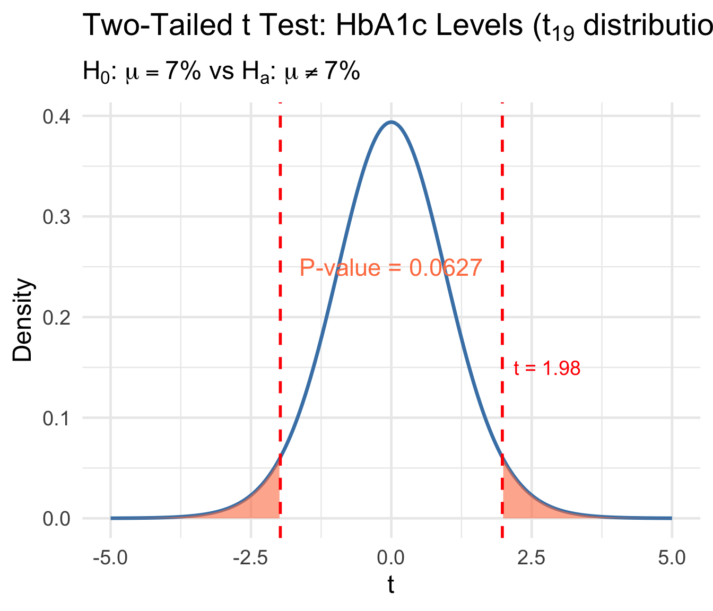

Lesson 14: P-Values; Power and Sample Size Determination
BSTA 551: Statistical Inference
Author
Jessica Minnier
Published
February 18, 2026
Lesson 14: P-Values; Power and Sample Size Determination
Review: Where We Left Off
Lesson 13: Tests About a Population Mean and Proportion
One-sample z test (\(\sigma\) known) and t test (\(\sigma\) unknown)
Score test and exact binomial test for proportions
Seven-step hypothesis testing procedure
CI-test duality: a \(100(1-\alpha)\%\) CI contains values not rejected at level \(\alpha\)
. . .
Today’s Goals:
Understand P-values as a continuous measure of evidence against \(H_0\)
Compute P-values for z and t tests
Understand the distribution of P-values under \(H_0\) and \(H_a\)
Use the noncentral t distribution for exact power calculations
Determine sample sizes for planning clinical trials using R
Roadmap for Today
Topic
Key Idea
Textbook
P-values
Probability of data as extreme or more extreme than observed
Devore 9.4
P-value distribution
Uniform under \(H_0\); concentrated near 0 under \(H_a\)
Devore 9.4
Power for the t test
Noncentral t distribution
Devore 9.2
Sample size determination
power.t.test() in R
Devore 9.2
. . .
Why This Matters
In medical research, P-values appear in virtually every published paper. Understanding what they mean — and what they do not mean — is essential for interpreting clinical evidence.
P-Values (Devore 9.4)
From Rejection Regions to P-Values
Recall the rejection region approach:
Fix \(\alpha\) (e.g., 0.05)
Find critical value(s)
Reject \(H_0\) if the test statistic falls in the rejection region
. . .
Limitation: The rejection region approach gives a binary decision (reject / fail to reject), but tells us nothing about how strongly the data contradict \(H_0\).
The rejection region approach treats these identically!
Definition of the P-Value
Definition (Devore 9.4)
The P-value is the probability, calculated assuming that the null hypothesis is true, of obtaining a value of the test statistic at least as contradictory to \(H_0\) as the value calculated from the available sample.
. . .
Key points:
The P-value is a probability
It is calculated assuming \(H_0\) is true
It is a function of the sample data (and therefore a random variable!)
We need to determine which values are “at least as contradictory” to \(H_0\)
Decision Rule Based on the P-Value
P-Value Decision Rule (Devore 9.4)
Select a significance level \(\alpha\). Then:
\[\text{Reject } H_0 \text{ if P-value} \leq \alpha; \qquad \text{Do not reject } H_0 \text{ if P-value} > \alpha\]
. . .
Equivalence to the rejection region method:
If the test statistic falls in the rejection region, then P-value \(\leq \alpha\)
If the test statistic falls outside the rejection region, then P-value \(> \alpha\)
. . .
Advantage: The P-value encodes more information than a binary reject/fail-to-reject decision. It conveys the strength of evidence against \(H_0\).
P-Values for z Tests
For a z test (test statistic \(Z\) with \(Z \sim N(0,1)\) under \(H_0\)):
\[\text{P-value} = \begin{cases} 1 - \Phi(z) & \text{for an upper-tailed test } (H_a: \mu > \mu_0) \\[6pt] \Phi(z) & \text{for a lower-tailed test } (H_a: \mu < \mu_0) \\[6pt] 2[1 - \Phi(|z|)] & \text{for a two-tailed test } (H_a: \mu \neq \mu_0) \end{cases}\]
where \(\Phi(z)\) is the standard normal CDF and \(z\) is the observed test statistic.
. . .
# Quick R reminders for P-value computationz_obs <-2.15cat("Upper-tailed P-value:", 1-pnorm(z_obs), "\n")
t.test() and prop.test() automatically compute P-values. Manual computation is needed only for understanding and for non-standard situations.
Medical Examples: Computing P-Values
Example: Hemoglobin A1c Levels in Diabetic Patients
Setting: A diabetes clinic is evaluating whether a new management protocol changes mean hemoglobin A1c (HbA1c) levels. The standard target is 7.0%. A sample of \(n = 20\) patients on the new protocol gives \(\bar{x} = 7.42\%\) and \(s = 0.95\%\).
Question: Is there evidence that the new protocol produces different mean HbA1c than the target?
. . .
# Data summaryn <-20xbar <-7.42s <-0.95mu0 <-7.0# Test statistict_stat <- (xbar - mu0) / (s /sqrt(n))cat("Test statistic: t =", round(t_stat, 3), "\n")
df <-19t_seq <-seq(-5, 5, length.out =500)y_t <-dt(t_seq, df = df)tibble(t = t_seq, y = y_t) |>ggplot(aes(x = t, y = y)) +geom_line(linewidth =1.2, color ="steelblue") +geom_area(data =tibble(t = t_seq[t_seq >=abs(t_stat)], y =dt(t_seq[t_seq >=abs(t_stat)], df)),aes(x = t, y = y), fill ="coral", alpha =0.6) +geom_area(data =tibble(t = t_seq[t_seq <=-abs(t_stat)], y =dt(t_seq[t_seq <=-abs(t_stat)], df)),aes(x = t, y = y), fill ="coral", alpha =0.6) +geom_vline(xintercept =c(-abs(t_stat), abs(t_stat)), linetype ="dashed", color ="red", linewidth =1) +annotate("text", x = t_stat +0.2, y =0.15, hjust =0, size =5, color ="red",label =paste0("t = ", round(t_stat, 2))) +annotate("text", x =0, y =0.25, size =6, color ="coral",label =paste0("P-value = ", round(p_value, 4))) +labs(x ="t", y ="Density",title =expression("Two-Tailed t Test: HbA1c Levels ("* t[19] *" distribution)"),subtitle =expression(paste(H[0], ": ", mu ==7.0, "% vs ", H[a], ": ", mu !=7.0, "%")))

HbA1c Example: Complete Analysis with t.test()
# Simulate individual patient data consistent with our summary statisticsset.seed(2026)hba1c <-rnorm(20, mean =7.42, sd =0.95)# Adjust to match desired summary statistics closelyhba1c <- (hba1c -mean(hba1c)) /sd(hba1c) *0.95+7.42# Full t.test outputhba1c_test <-t.test(hba1c, mu =7.0, alternative ="two.sided")hba1c_test
One Sample t-test
data: hba1c
t = 1.9772, df = 19, p-value = 0.06272
alternative hypothesis: true mean is not equal to 7
95 percent confidence interval:
6.975386 7.864614
sample estimates:
mean of x
7.42
. . .
Interpretation: At \(\alpha = 0.05\), the P-value of 0.0627 is less than 0.05, so we reject \(H_0\). There is statistically significant evidence that the mean HbA1c under the new protocol differs from 7.0%.
Example: Serum Transferrin Receptor in Pregnancy (Devore 9.4, Exercise 55)
Setting: The average serum transferrin receptor concentration for all women is known to be 5.63 mg/L. A study reported P-value > 0.10 for testing \(H_0: \mu = 5.63\) vs \(H_a: \mu \neq 5.63\) based on \(n = 176\) pregnant women.
. . .
Question: Using \(\alpha = 0.01\), what would you conclude?
cat("Since 0.10 >", alpha, ", we fail to reject H0.\n\n")
Since 0.10 > 0.01 , we fail to reject H0.
cat("Conclusion: There is insufficient evidence at the 0.01\n")
Conclusion: There is insufficient evidence at the 0.01
cat("significance level to conclude that the mean serum\n")
significance level to conclude that the mean serum
cat("transferrin receptor concentration for pregnant women\n")
transferrin receptor concentration for pregnant women
cat("differs from the value of 5.63 mg/L for all women.")
differs from the value of 5.63 mg/L for all women.
Example: Post-Surgical Recovery Time
Setting: The standard mean recovery time after a particular surgery is 14 days. A surgeon has adopted a new minimally invasive technique and records recovery times for 15 patients.
recovery <-c(11.2, 13.5, 10.8, 12.1, 14.3, 9.7, 11.9, 12.8,10.5, 13.1, 11.4, 12.6, 10.2, 13.8, 11.1)# One-sided test: H0: mu = 14 vs Ha: mu < 14recovery_test <-t.test(recovery, mu =14, alternative ="less")recovery_test
One Sample t-test
data: recovery
t = -5.7665, df = 14, p-value = 2.441e-05
alternative hypothesis: true mean is less than 14
95 percent confidence interval:
-Inf 12.56457
sample estimates:
mean of x
11.93333
cat("This extremely small P-value provides overwhelming evidence\n")
This extremely small P-value provides overwhelming evidence
cat("that the new surgical technique reduces mean recovery time\n")
that the new surgical technique reduces mean recovery time
cat("below the standard 14 days.")
below the standard 14 days.
The Distribution of P-Values (Devore Example 9.22)
P-Values Are Random Variables
The P-value is computed from the test statistic, which is computed from sample data. Different samples yield different test statistics and therefore different P-values.
. . .
Key theoretical results:
When \(H_0\) is true: the P-value has a Uniform(0, 1) distribution
When \(H_0\) is false: the P-value distribution is concentrated near 0
. . .
Why Uniform Under \(H_0\)?
If \(H_0\) is true, then \(P(\text{P-value} \leq \alpha) = \alpha\) for any \(\alpha \in [0, 1]\). This is precisely the definition of a Uniform(0, 1) distribution!
Proof Sketch: P-Value is Uniform Under \(H_0\)
For an upper-tailed z test, the P-value is \(p = 1 - \Phi(Z)\) where \(Z \sim N(0,1)\) under \(H_0\).
. . .
Let \(U = 1 - \Phi(Z)\). For any \(u \in (0, 1)\):
Since \(P(U \leq u) = u\) for all \(u \in (0,1)\), we have \(U \sim \text{Uniform}(0,1)\).
. . .
Consequence: Under \(H_0\), any P-value threshold \(\alpha\) rejects exactly proportion \(\alpha\) of the time — this is why the significance level controls the Type I error rate.
Simulation: P-Value Distribution (Devore Example 9.22)
Code
set.seed(551)n_sims <-10000n <-4sigma <-2# Function to compute P-value from one-sample t test (upper-tailed)sim_pvalue <-function(n, mu_true, mu0 =30, sigma =2) { x <-rnorm(n, mean = mu_true, sd = sigma) t_stat <- (mean(x) - mu0) / (sd(x) /sqrt(n))pt(t_stat, df = n -1, lower.tail =FALSE)}# Simulate under three scenariospvals_H0_true <-replicate(n_sims, sim_pvalue(n, mu_true =30)) # H0 truepvals_mu31 <-replicate(n_sims, sim_pvalue(n, mu_true =31)) # H0 false, mu=31pvals_mu32 <-replicate(n_sims, sim_pvalue(n, mu_true =32)) # H0 false, mu=32sim_data <-bind_rows(tibble(pvalue = pvals_H0_true, scenario ="H0 true (mu = 30)"),tibble(pvalue = pvals_mu31, scenario ="H0 false (mu = 31)"),tibble(pvalue = pvals_mu32, scenario ="H0 false (mu = 32)")) |>mutate(scenario =fct_inorder(scenario))ggplot(sim_data, aes(x = pvalue)) +geom_histogram(aes(y =after_stat(density)), bins =30, fill ="steelblue", color ="white", alpha =0.7) +geom_vline(xintercept =0.05, linetype ="dashed", color ="red", linewidth =1) +annotate("text", x =0.08, y =Inf, vjust =2, hjust =0,label =expression(alpha ==0.05), color ="red", size =5) +facet_wrap(~scenario, ncol =3) +labs(x ="P-value", y ="Density",title ="Distribution of P-Values: 10,000 Simulated t Tests (n = 4)",subtitle =expression(paste("Testing ", H[0], ": ", mu ==30, " vs ", H[a], ": ", mu >30, " with ", sigma ==2))) +theme(strip.text =element_text(size =14, face ="bold"))
What the Simulation Shows
# Proportion of P-values <= 0.05 in each scenariocat("Proportion rejecting H0 at alpha = 0.05:\n")
cat(" H0 false (mu = 31):", round(mean(pvals_mu31 <=0.05), 3), " (power at mu = 31)\n")
H0 false (mu = 31): 0.201 (power at mu = 31)
cat(" H0 false (mu = 32):", round(mean(pvals_mu32 <=0.05), 3), " (power at mu = 32)\n")
H0 false (mu = 32): 0.462 (power at mu = 32)
. . .
Key insights (Devore Example 9.22):
When \(H_0\) is true, the P-value histogram is approximately flat (Uniform)
Only ~5% of P-values fall below 0.05, confirming \(\alpha\) controls the Type I error rate
As \(\mu\) moves farther from \(\mu_0 = 30\), P-values concentrate closer to 0
Even at \(\mu = 32\), power is less than 50% because \(n = 4\) is very small!
Common Misinterpretations of P-Values
What the P-Value is NOT
Not the probability that \(H_0\) is true: P-value \(\neq P(H_0 \text{ is true} \mid \text{data})\)
Not the probability of making an error: it is \(P(\text{data this extreme} \mid H_0 \text{ true})\)
Not a measure of effect size: a small P-value can arise from a tiny effect with large \(n\)
A P-value of 0.05 does not mean there is a 5% chance \(H_0\) is true
Failing to reject \(H_0\) does not mean \(H_0\) is true (absence of evidence \(\neq\) evidence of absence)
. . .
ASA Statement on P-Values (2016)
The American Statistical Association emphasized: “a P-value does not provide a good measure of evidence regarding a model or hypothesis.” P-values should be supplemented with effect sizes, confidence intervals, and clinical judgment.
Statistical vs Clinical Significance
Code
# Large sample can detect trivially small effectsset.seed(551)n_large <-5000bp_data <-rnorm(n_large, mean =120.3, sd =15) # Mean barely above 120bp_test <-t.test(bp_data, mu =120)cat("n =", n_large, "\n")
cat("Clinically meaningful difference? A 0.3 mmHg difference\n")
Clinically meaningful difference? A 0.3 mmHg difference
Code
cat("in systolic BP has NO clinical relevance!")
in systolic BP has NO clinical relevance!
. . .
Practical Advice for Medical Research
Always report both the P-value and a confidence interval. The CI gives a range of plausible values for the effect size, which is what clinicians actually need for decision-making.
Power for the t Test: The Noncentral t Distribution
Review: Power for the z Test (Lesson 13)
For the one-sample z test (\(\sigma\) known), we derived closed-form expressions:
where \(F(x; m, \delta)\) is the CDF of the noncentral \(t\) distribution.
. . .
In R:pt(t_crit, df, ncp = delta, lower.tail = FALSE)
. . .
# Example (Devore Example 9.14 adapted to medical context):# Testing whether mean systolic BP exceeds 120 mmHg# H0: mu = 120, Ha: mu > 120, alpha = 0.05, n = 10, sigma = 10# What is the power when mu' = 125?n <-10; mu0 <-120; mu_prime <-125; sigma <-10; alpha <-0.05delta <- (mu_prime - mu0) / (sigma /sqrt(n))t_crit <-qt(1- alpha, df = n -1)power <-pt(t_crit, df = n -1, ncp = delta, lower.tail =FALSE)cat("Noncentrality parameter: delta =", round(delta, 3), "\n")
alpha <-0.05mu0 <-120# null value for systolic BPsigma <-10# Power curves for different sample sizessample_sizes <-c(10, 25, 50, 100)mu_range <-seq(120, 130, by =0.25)power_data <-expand_grid(n = sample_sizes, mu_prime = mu_range) |>mutate(delta = (mu_prime - mu0) / (sigma /sqrt(n)),t_crit =qt(1- alpha, df = n -1),power =pt(t_crit, df = n -1, ncp = delta, lower.tail =FALSE),n_label =paste0("n = ", n) )ggplot(power_data, aes(x = mu_prime, y = power, color = n_label)) +geom_line(linewidth =1.5) +geom_hline(yintercept =0.80, linetype ="dashed", color ="gray40") +geom_hline(yintercept = alpha, linetype ="dotted", color ="gray60") +annotate("text", x =129.5, y =0.82, label ="80% power", color ="gray40", size =5) +annotate("text", x =129.5, y =0.07, label =expression(alpha ==0.05), color ="gray60", size =4) +scale_color_brewer(palette ="Set1") +labs(x =expression("True "* mu *" (mmHg)"),y ="Power",color ="Sample Size",title ="Power Curves: One-Sided t Test for Systolic Blood Pressure",subtitle =expression(paste(H[0], ": ", mu ==120, " vs ", H[a], ": ", mu >120, ", ", sigma ==10, ", ", alpha ==0.05)))
Key Features of Power Curves
Two intuitive features:
For any fixed departure from \(H_0\), power increases with sample size
For any fixed sample size, power increases as \(\mu'\) moves farther from \(\mu_0\)
. . .
Factors that increase power:
Larger \(n\): more data \(\Rightarrow\) smaller SE \(\Rightarrow\) easier to detect departures
Larger effect size\(|\mu' - \mu_0|\): bigger departures are easier to detect
Smaller \(\sigma\): less noise \(\Rightarrow\) easier to detect signal
Larger \(\alpha\): easier to reject (but at the cost of more Type I errors)
. . .
Clinical Trial Implication
The power analysis must be conducted before collecting data. It ensures the study has sufficient sample size to detect a clinically meaningful effect.
Sample Size Determination
Why Determine Sample Size?
Clinical scenario: You are designing a randomized trial to test whether a new antihypertensive drug lowers systolic blood pressure more than a placebo.
. . .
Key questions:
How many patients do we need to detect a meaningful effect?
What effect size is clinically important?
What balance of Type I and Type II errors is acceptable?
# How many patients to detect a 5 mmHg reduction with 80% power?delta <-5# clinically meaningful difference (mmHg)sigma <-15# estimated SDalpha <-0.05beta <-0.20# power = 0.80# Two-tailed z testn_z <- (sigma * (qnorm(1- alpha/2) +qnorm(1- beta)) / delta)^2cat("z test sample size (two-tailed):", ceiling(n_z), "patients")
z test sample size (two-tailed): 71 patients
R’s power.t.test() Function
R provides power.t.test() for sample size and power calculations for the one-sample and two-sample t tests. It accounts for the noncentral t distribution automatically.
. . .
# Same example using power.t.test()result <-power.t.test(delta =5, # difference to detectsd =15, # estimated standard deviationsig.level =0.05, # alphapower =0.80, # desired powertype ="one.sample", # one-sample testalternative ="two.sided")result
One-sample t test power calculation
n = 72.58407
delta = 5
sd = 15
sig.level = 0.05
power = 0.8
alternative = two.sided
Example: Planning a Clinical Trial for Blood Pressure
Setting: Researchers are planning a trial to test whether a new drug reduces systolic blood pressure. Historical data suggests \(\sigma \approx 12\) mmHg. A reduction of 5 mmHg is considered clinically meaningful.
# One-sided test: H0: mu >= 0 vs Ha: mu < 0 (reduction in BP)power_result <-power.t.test(delta =5,sd =12,sig.level =0.05,power =0.80,type ="one.sample",alternative ="one.sided")cat("For 80% power:", ceiling(power_result$n), "patients needed\n")
For 80% power: 38 patients needed
# What about 90% power?power_90 <-power.t.test(delta =5, sd =12, sig.level =0.05,power =0.90, type ="one.sample", alternative ="one.sided")cat("For 90% power:", ceiling(power_90$n), "patients needed\n")
For 90% power: 51 patients needed
# What about a smaller effect (3 mmHg)?power_small <-power.t.test(delta =3, sd =12, sig.level =0.05,power =0.80, type ="one.sample", alternative ="one.sided")cat("For 3 mmHg effect:", ceiling(power_small$n), "patients needed")
For 3 mmHg effect: 101 patients needed
Sample Size as a Function of Effect Size and Power
Code
sigma <-12alpha <-0.05# Vary effect sizedelta_range <-seq(2, 10, by =0.5)power_levels <-c(0.80, 0.90, 0.95)ss_data <-expand_grid(delta = delta_range, power = power_levels) |>rowwise() |>mutate(n =ceiling(power.t.test(delta = delta, sd = sigma, sig.level = alpha,power = power, type ="one.sample", alternative ="two.sided" )$n),power_label =paste0("Power = ", power *100, "%") ) |>ungroup()p_ss <-ggplot(ss_data, aes(x = delta, y = n, color = power_label)) +geom_line(linewidth =1.5) +geom_point(size =2) +scale_color_brewer(palette ="Set1") +labs(x =expression("Clinically Meaningful Difference "* Delta *" (mmHg)"),y ="Required Sample Size (n)",color ="",title ="Sample Size vs Effect Size for One-Sample t Test",subtitle =expression(paste(sigma ==12, " mmHg, ", alpha ==0.05, ", two-tailed"))) +theme(legend.position ="top")# Power as a function of n for fixed deltan_range <-seq(5, 200, by =5)delta_levels <-c(3, 5, 8)pow_data <-expand_grid(n = n_range, delta = delta_levels) |>rowwise() |>mutate(power =power.t.test(n = n, delta = delta, sd = sigma, sig.level = alpha,type ="one.sample", alternative ="two.sided" )$power,delta_label =paste0("Delta = ", delta, " mmHg") ) |>ungroup()p_pow <-ggplot(pow_data, aes(x = n, y = power, color = delta_label)) +geom_line(linewidth =1.5) +geom_hline(yintercept =0.80, linetype ="dashed", color ="gray50") +scale_color_brewer(palette ="Dark2") +labs(x ="Sample Size (n)", y ="Power",color ="",title ="Power vs Sample Size",subtitle =expression(paste(sigma ==12, " mmHg, ", alpha ==0.05, ", two-tailed"))) +theme(legend.position ="top")p_ss + p_pow
Example: Neonatal ICU Glucose Monitoring
Setting: A neonatal ICU has historically maintained mean blood glucose at 80 mg/dL (sd = 20 mg/dL) in premature infants. A new feeding protocol is introduced. The clinical team wants to detect any shift in mean glucose of at least 8 mg/dL with 90% power.
# How many infants are needed?nicu_power <-power.t.test(delta =8,sd =20,sig.level =0.05,power =0.90,type ="one.sample",alternative ="two.sided")cat("=== NICU Study Design ===\n")
# Verify: what is the actual power at this sample size?actual_power <-power.t.test(n =ceiling(nicu_power$n),delta =8,sd =20,sig.level =0.05,type ="one.sample",alternative ="two.sided")cat("Actual power at n =", ceiling(nicu_power$n), ":", round(actual_power$power, 4))
Actual power at n = 68 : 0.9016
Manual Power Calculation with the Noncentral t
Let’s verify power.t.test() using the noncentral t distribution directly:
Always report P-values AND confidence intervals — the CI tells you about effect size
Conduct power analysis BEFORE the study — not after!
Use clinically meaningful effect sizes — not just “any” difference
Don’t p-hack: pre-register hypotheses and analysis plans
Interpret in context: a P-value of 0.048 vs 0.052 should not lead to radically different conclusions
Consider multiple comparisons: if testing many hypotheses, adjust \(\alpha\) (Bonferroni, FDR, etc.)
. . .
FDA Guidance
Clinical trials typically require \(\alpha = 0.05\) (two-sided) and power \(\geq 0.80\). Phase III trials often require power \(\geq 0.90\) to ensure adequate evidence for drug approval.
Key Takeaways and Looking Ahead
Key Takeaways
Today’s Main Points
P-value definition: probability of observing data as extreme or more extreme, assuming \(H_0\) is true
P-value decision rule: reject \(H_0\) when P-value \(\leq \alpha\) (equivalent to rejection region method)
P-value formulas: depend on whether the test is upper-tailed, lower-tailed, or two-tailed
P-value distribution: Uniform(0, 1) under \(H_0\); concentrated near 0 under \(H_a\)
Noncentral t: when \(H_0\) is false, \(T\) follows a noncentral \(t\) with \(\delta = (\mu' - \mu_0)/(\sigma/\sqrt{n})\)
Power in R:pt(t_crit, df, ncp = delta) for manual; power.t.test() for convenience
Sample size: determined by \(\alpha\), power, \(\sigma\), and the clinically meaningful effect size
. . .
Common mistakes to avoid:
Interpreting P-value as \(P(H_0 \text{ true})\)
Confusing statistical and clinical significance
Computing power after seeing the data (post hoc power)
Using \(S\) (from data) in place of \(\sigma\) in the z test power formula
Looking Ahead
Next class (Lesson 15): Neyman-Pearson Lemma; Likelihood Ratio Tests (Devore 9.5)
Most powerful tests for simple hypotheses
The Neyman-Pearson framework
Likelihood ratio test statistic
Connection to tests we’ve already learned
References
Devore, Berk, and Carlton. Modern Mathematical Statistics with Applications (Springer). Sections 9.2, 9.4
Chihara and Hesterberg. Mathematical Statistics with Resampling and R (Wiley). Sections 8.1–8.2
Wasserstein, R. L., & Lazar, N. A. (2016). The ASA Statement on p-Values: Context, Process, and Purpose. The American Statistician, 70(2), 129–133.